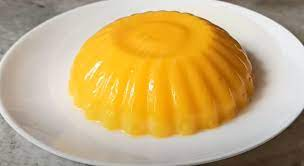

Mango Pudding

Mango pudding is a popular dessert in Asian countries. This recipe prepares rich and creamy fresh mango
pudding by mixing agar agar, pureed mango, milk and sugar. The garnish of fresh fruit makes it even more
tempting.
Ingredients:
- 1 cup Mango Pulp (or mango puree), (approx. 1 large Mango)
- 3 tablespoons Hot Water
- 1 teaspoon Agar Agar Powder (Chinagrass or non-flavored Gelatin)(or 5 gms Agar Agar Strands)
- 3/4 cup Milk
- 1/4 cup Condensed Milk
Steps:
- If you are using fresh mango, peel and dice the mango. Blend diced mango in a blender or food
processor until smooth puree.
- Pour 3 tablespoons water in a pan. Add 1 teaspoon agar agar powder. Mix well and cook until it
dissolves completely. If you are using agar agar flakes(strands) instead of agar agar powder, cut
the flakes into small pieces using a scissor and then cook it in water in a pan until it dissolves
completely.
- Meanwhile, heat 3/4 cup millk in the same pan over medium flame. Let it heat for 3-4 minutes. Then,
add 1/4 cup condensed milk and turn off the flame. Mix well. There is no need to boil the milk.
- Add dissolved agar agar mixture to the milk and mix well. Let the milk cool for a few minutes.
- Add mango puree.
- Mix well.
- Pour it into 3 individual serving bowls. Cover the bowls with aluminum foil or plastic wrap and place
in the refrigerator for at least 4-5 hours before serving.
- Garnish with fresh diced mango or dry fruits and serve.
Home